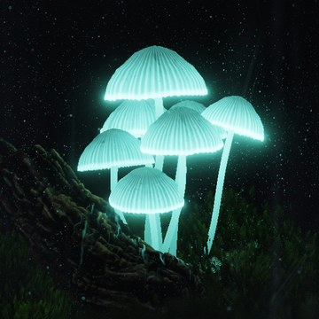

ガラス瓶の中で、光るキノコが生えては消えていきます。
ときどき霧を吹くだけ。湿り気が戻ると、土の中の菌糸から新しい芽が顔を出します。
夜になると、キノコはゆっくりと明るさを変えながら光り、土の中では菌糸がかすかに光ります。
傘にそっと触れると、しなって揺れ、胞子がふわりと舞います。
瓶の中の流木や苔は、自分で並べて作れます。

光るキノコのテラリウム
近日公開ガラス瓶の中で、光るキノコが生えては消えていきます。
ときどき霧を吹くだけ。湿り気が戻ると、土の中の菌糸から新しい芽が顔を出します。
夜になると、キノコはゆっくりと明るさを変えながら光り、土の中では菌糸がかすかに光ります。
傘にそっと触れると、しなって揺れ、胞子がふわりと舞います。
瓶の中の流木や苔は、自分で並べて作れます。
Glowing mushrooms sprout and fade inside a glass jar.
All you do is mist it now and then. When the moisture returns, new buds rise from the mycelium in the soil.
At night the mushrooms glow, slowly brightening and dimming, while faint threads of mycelium shimmer underground.
Touch a cap gently and it sways, releasing a soft drift of spores.
Arrange the driftwood, stones and moss inside the jar yourself.